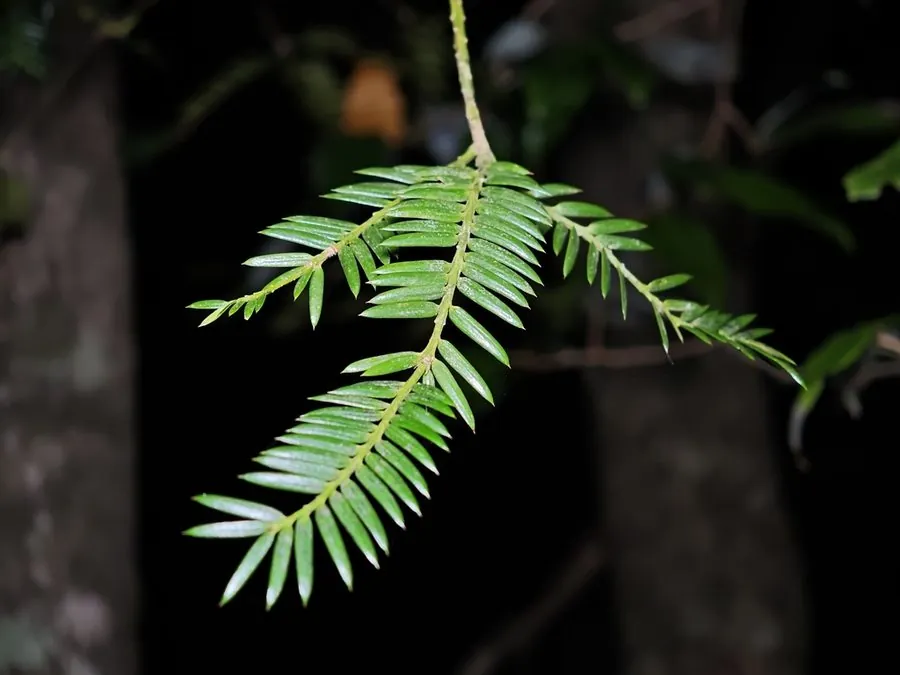

蕨类与裸子植物 · 植物界
巴山榧 Torreya fargesii

巴山榧是中国特有的珍稀裸子植物，分布区狭窄，种子可食，已被列为国家重点保护野生植物，需加强保护。
- 分类
- 门裸子植物门纲松纲目柏目科红豆杉科属榧属
- 栖息环境
- 海拔 1000–2000 m 的针阔混交林，喜温凉湿润半阴
- 地理分布
- 中国四川、重庆、陕西、湖北、湖南等山地，中国特有种
- 保护级别
- IUCN 暂无评估；中国国家二级重点保护野生植物
物种志
巴山榧是红豆杉科榧属常绿乔木，高可达 12 m，树皮灰褐色、纵裂。叶片条形、坚硬，长 1.5–3 cm，螺旋状排列成两列，表面深绿色，叶背有两条白色气孔带。雌雄异株，雄球花单生叶腋，雌球花成对生于枝顶。种子核果状，卵圆形，外被肉质假种皮，成熟时紫红色。
巴山榧是中国特有种，分布于四川、重庆、陕西、湖北、湖南等地的山地，多生于海拔 1000–2000 m 的针阔混交林中，喜温凉湿润、半阴的环境。它生长缓慢、天然更新困难，野生种群数量少，分布区狭窄。巴山榧的种子可炒食，木材可供细木工用；由于生境破坏和人为采挖，野生资源稀少，中国已将其列为国家二级重点保护野生植物，需加强就地保护和人工繁育。
形态与习性
- 树高可达 12 m
- 叶条形坚硬，排成两列
- 种子核果状，外被肉质假种皮
- 习性生长缓慢，天然更新困难
- 保护国家二级重点保护野生植物
趣味知识
- 巴山榧是中国特有种，野生种群数量很少，分布区狭窄。
- 它的种子可炒食，木材可供细木工使用。
- 巴山榧被列为国家二级保护野生植物，需加强保护。